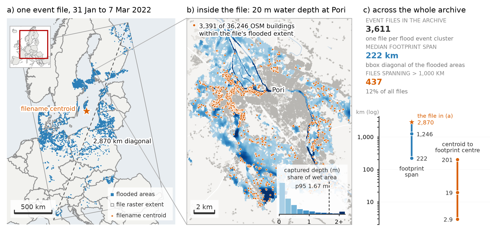
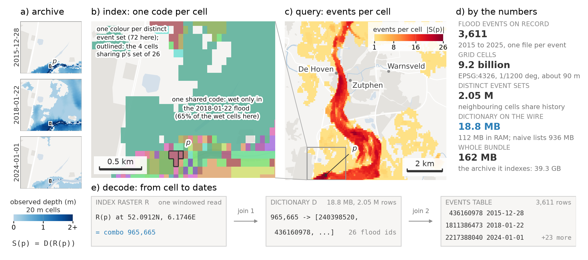
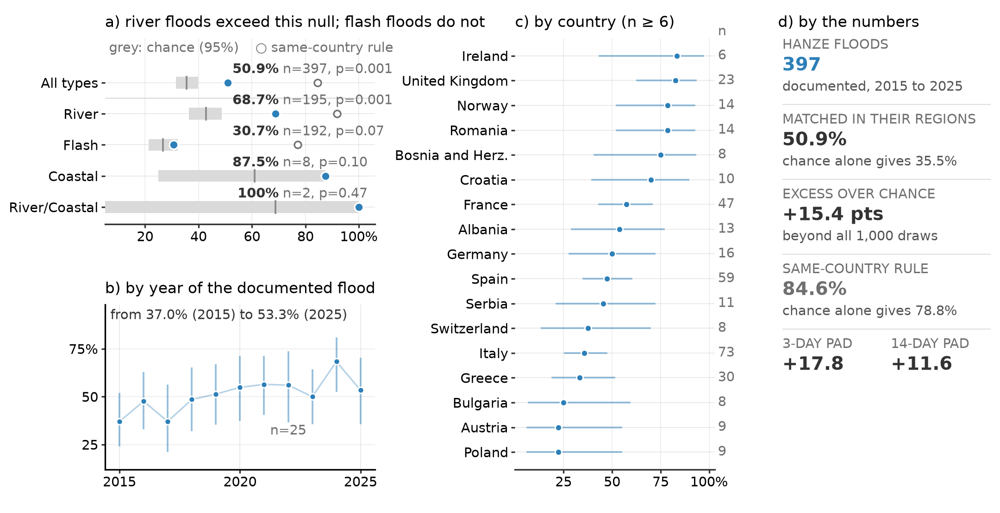

Concepts: how the index works
This page explains the one idea that makes the rest of EuroFlood click: how a
huge, un-indexed archive of flood rasters becomes a query you can run in
milliseconds and a few megabytes. You don't need this to use the library, but
it explains why floods() is cheap, why recurrence and footprints need no
download, and what all the files in the cache are.
The problem
The JRC / CEMS-EFAS archive is ~3,610 satellite flood-depth GeoTIFFs (~39 GB of depth rasters), distributed through a flat HTTP directory with no API, catalogue, or spatial index. The only geolocation you get without opening a file is a centroid encoded in its filename, and a single event file can contain flooded areas up to 2,870 km apart, so that centroid cannot represent the event. Filtering by filename therefore misses most events relevant to a place: a generous 2° buffer recovers at most ~48% of events, and precision falls to ~10% at city scale.

The archive is open in principle but hard to query in practice. EuroFlood precomputes an index so that "which floods hit Zutphen, and when?" becomes a single small raster read instead of a scan of every tile.
The building blocks
The whole index is three artifacts (a raster, a dictionary, and a table), built and decoded as shown below. The rest of this section walks through each piece.

1. A global grid
All maps are resampled onto one fixed lat/lon grid: EPSG:4326 at 1/1200°
(≈3 arc-sec, ≈90 m pixels), covering Europe. (The source depth rasters are native
20 m; the index trades that resolution for a compact, uniform grid.) Every pixel has a
stable (row, col) address, so "the same place" means "the same pixel" across all
events.
2. The index COG: a pixel is a set of events
The index is a single Cloud-Optimized GeoTIFF (europe_flood_index.tif) on
that grid. Each pixel holds a uint32 combo_id:
0: never flooded (the vast majority; the COG is sparse and compresses to 142 MB).N > 0: a combination id, a stable handle for the exact set of flood events that flooded this pixel.
Many pixels share the same set of events, so there are far fewer distinct
combo_ids than pixels. That's what keeps the index small.
Why ~161 MB is enough
Europe is ~9.2 billion grid cells. Only 89.6 million (1.0%) were ever wet, and those resolve to just 2.05 million distinct event combinations. So instead of a dense 37 GB raster, or ~891 MB of explicit per-cell event lists, the index stores a 142 MB COG + an 18.8 MB dictionary + a 0.4 MB events table: about 161 MB in total, versus ~39 GB of source depth rasters.
3. The dictionary: combo_id → flood_ids
A small sorted GeoParquet (flood_dictionary.parquet) maps each combo_id to the
list of flood-event ids that produced it:
4. The events table: flood_id → metadata
A tiny events.parquet maps each flood_id to its metadata (start/end date, year,
cluster, source filename + download URL). Storing metadata once here, instead of
repeating it inside every combo, keeps the dictionary + events table to ~19 MB with no
information loss.
flowchart LR
P["Index COG pixel<br/>combo_id = 42"] --> D["Dictionary<br/>42 → [811, 1290]"]
D --> E1["events.parquet<br/>811 → 2015-11-30, WD_MERGE_…tif"]
D --> E2["events.parquet<br/>1290 → 2019-09-12, WD_MERGE_…tif"]Discover → Extract
EuroFlood follows a two-stage model. Discovery finds which events affected a region, when they occurred, and how often cells were inundated, using only the ~161 MB index. Extraction then retrieves native-resolution depth rasters, but only for the events you selected. So a query resolves in two cheap steps, then an optional extract:
- Resolve the region: a place name (geocoded), a Eurostat NUTS identifier
(
nuts="NL22", exact 1:1M boundaries), bbox, point+radius, or shapefile becomes an ROI polygon in WGS 84 (EPSG:4326, the grid's CRS). Coordinates in another system are declared withcrs=and reprojected (a projected bbox is densified first so its edges follow the true rectangle).shape="bbox"/"hull"optionally regularizes it to a bounding rectangle / convex hull (handy when an admin boundary follows a river), andbuffer_mgrows it by ground metres, computed in the local UTM zone. - Discover: mask the index COG to the ROI (reading only that window), collect
the distinct
combo_ids, expand them toflood_idsvia the dictionary, and join the events table for metadata. The result is aFloodFrame, one row per event. No depth rasters are touched. - Extract (opt-in):
.download()fetches and crops only the source depth GeoTIFFs for the events you selected.
That's why floods("Zutphen, Netherlands") transfers a few MB and returns instantly, while the
actual depth data is fetched only when you ask.
Local vs. remote index
The same index can live locally or be streamed:
- Remote (default for the published index): the COG is read a window at a time
over HTTP via GDAL's
/vsicurl, and only the ~19 MB dictionary + events tables are cached on first use (SHA-256-verified). A query downloads a few MB, never the whole index. Controlled byEUROFLOOD_INDEX_MODE/EUROFLOOD_INDEX_BASE_URL. - Local: everything is read from the cache directory.
euroflood mirror indexpulls the full ~161 MB bundle once for fully-offline / HPC use.
Hazard has a parallel switch, hazard_mode (auto/local/remote), and both
collections share a master EUROFLOOD_OFFLINE=1 / euroflood.offline() toggle that forces
everything cache-only and the geocoder offline. Stage data with euroflood mirror
index|floods|hazard|all and gate readiness with euroflood verify … --deep. In local/offline
mode a missing tile raises a clear error naming the mirror command to run, never a silent
partial result.
What the visualizations reuse
Because the index already encodes which events hit each pixel, several views come for free, no download:
- Recurrence heatmap: per pixel,
len(flood_ids)is exactly how many times it flooded. Darker = more floods. - Per-event footprints: an event's extent is the union of pixels whose
combo_idincludes that event;.footprints()returns one geometry per event. - Depth map: the only view that needs the actual raster, hence
depth=Truedownloads it.
So most views cost nothing beyond the query; only the depth map touches the network:
| Call | Network / disk | Shows |
|---|---|---|
cat.plot() / .explore() |
none | recurrence heatmap (historic) / context (hazard) |
cat.plot(event_id=…) |
none | one event's footprint |
cat.footprints() / cat.plot(footprints=True) |
none | each event's extent (data + map) |
cat.plot(depth=True, …) |
downloads rasters | actual water-depth map |
ef.plot_depth(path) |
none | a depth map from a downloaded GeoTIFF |
See Tutorial 3: Visualize for the full gallery.
How complete, and how trustworthy
The index reconstructs the archive's event footprints exactly at its ~90 m grid: across 110 events sampled from the 2015–2025 record, footprints decoded from the published index match an independent re-ingest of the source rasters with an IoU of 1.000: no missing or spurious cells, no missing or spurious events. Queries also return byte-identical results whether streamed from the public host, a local mirror, or a private replica.
And the index is fast because discovery reads only a window of it. Computing recurrence for the whole Netherlands, for example, is a 15.2 MB windowed read of the index versus 3.9 GB of source rasters, a 254× reduction; marginal queries transfer just 0.12–0.91 MB.
How complete is the archive itself? Compared against HANZE, an independent European flood-impact database (397 floods, 2015–2025), 84.6% of documented floods coincide with an archived event in the same country within a week, above the ~78.8% expected by chance (p = 0.002). The signal is strongest for river floods (91.8%) and indistinguishable from chance for flash floods (77.1%), and corroboration rises across the record (76.1% in 2015 → 97.6% in 2024, 90.0% in 2025). This is a co-occurrence indicator at country resolution, not a detection rate: a randomly dated record already matches most of the time, which is why the by-type split carries the result.

Interpreting your results
The index answers "where and when has flooding been detected?", not "where has flooding occurred?" A few things to keep in mind:
Detected ≠ complete
An absent or spatially limited footprint does not mean flooding was absent. Sentinel-1 under-detects short-lived, urban, vegetated, and topographically confined events (see the Valencia DANA and Baltic surge case studies).
Recurrence is a detection count, not a return period
A recurrence value is how many archived events touched a cell, not a hydrological frequency or return period. Two nearby cells can differ simply because of when satellites happened to observe them.
Use the index for discovery, the 20 m rasters for measurement
The any-wet resampling that keeps the index lossless also enlarges footprints:
a median 1.49× area inflation (mean 1.53; 10th–90th percentile 1.27–1.82)
relative to the native 20 m wet area. Use the index for discovery, recurrence, and
spatial selection; compute inundated area, depth, and volume from the downloaded
20 m rasters (.download().stats()).
Modelled GLOFAS hazard maps and observed footprints are different representations (a return-period scenario versus what a satellite saw on specific dates), so treat them as complementary, not as validations of each other. Depths themselves are reconstructed (FLEXTH), accurate to roughly a decimetre (RMSE 0.28–0.62 m).
The cache, at a glance
A built/mirrored index bundle contains:
| File | What it is |
|---|---|
europe_flood_index.tif |
the sparse COG (pixel = combo_id) |
flood_dictionary.parquet |
combo_id → flood_ids |
events.parquet |
flood_id → metadata |
dictionary_meta.json |
schema/version/layout |
manifest.json |
provenance + checksums (the publish/validate contract) |
Producers build these with mirror → ingest → build-index; see the
HPC Runbook.